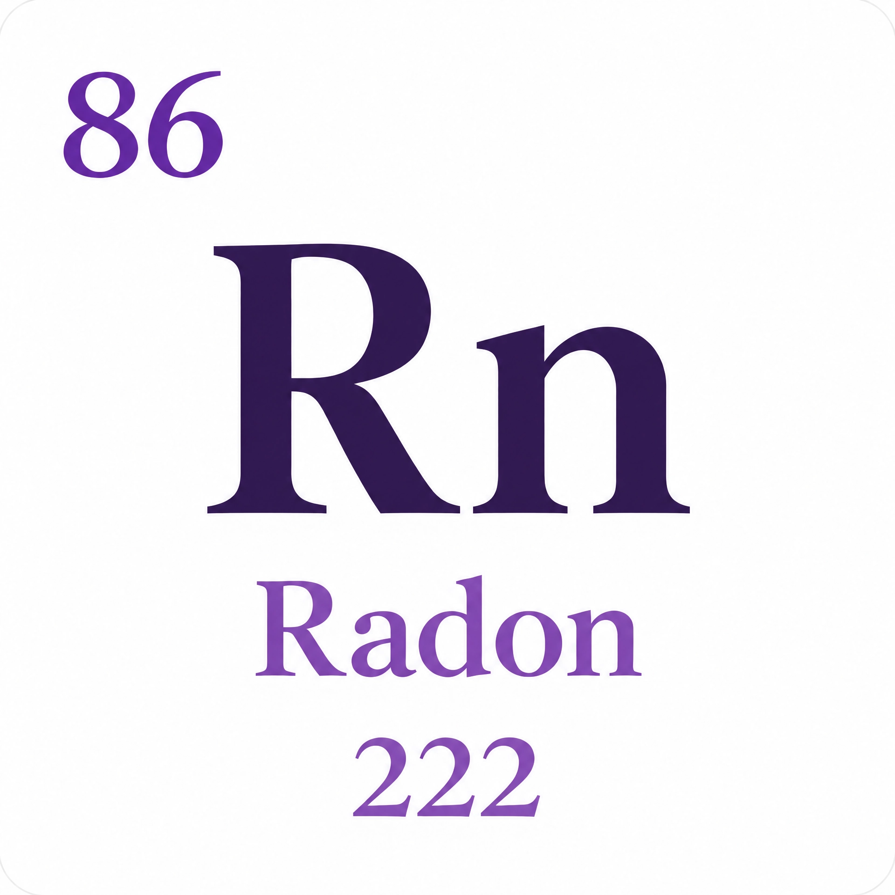

Identificação
Nome: Radônio
Símbolo: Rn
Número atômico: 86
O gás nobre radioativo


Um gás nobre, invisível e radioativo, presente naturalmente no solo e nas rochas.
Nome: Radônio
Símbolo: Rn
Número atômico: 86
Estado físico: Gasoso
Coloração: Incolor
Principais propriedades: Gás nobre, inodoro, radioativo e incolor
Locais: Águas minerais, termais e subterrâneas, solo e rochas
Ocorrência: Ocorre livre na natureza
Principais minerais: Uraninita, urânio e rádio
Ano: 1899
Cientistas: Robert Bowie Owens e Ernest Rutherford (1899); Friedrich Dorn (1900)
Como ocorreu: Owens e Rutherford observaram que o tório liberava um gás radioativo. Friedrich Dorn estudou o fenômeno e identificou o gás, que posteriormente foi chamado de Radônio.
É um dos principais contribuintes para a dose de radiação ionizante recebida pela população geral.
Quando inalado, a sua desintegração pode causar sérios danos ao pulmão, como o câncer de pulmão.
Materiais consultados para a elaboração deste trabalho.